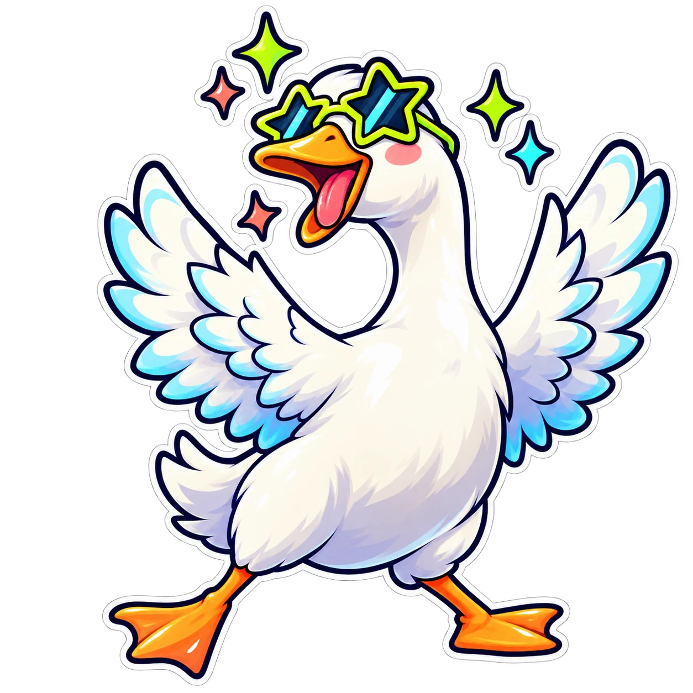
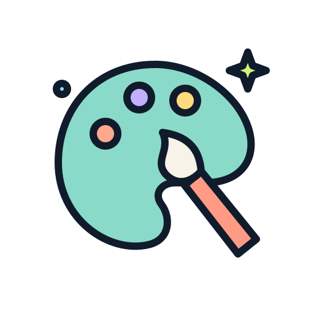

01 / ИГРИВЫЕ ПЕРСОНАЖИ Игры · киберспорт · празднования
Игры · киберспорт · празднования
Игры · киберспорт · празднованияАркадный азарт
Отправьте хорошие моменты на орбиту.
!sticker rocket100 баллов*Коллекция стикеров / Выберите свой характер
Немного азарта. Тихое спасибо. Один совершенно необязательный гусь. Шесть тематических наборов для разных сообществ, со статичными и подвижными вариантами каждого рисунка.
Одобрено ведущим. Выключено по умолчанию. Бесплатный предпросмотр.
Выберите настроение
Выберите набор, вариант движения и посмотрите, как он выглядит на экране. В каждом наборе один рисунок с тремя вариантами показа.
Игры · киберспорт · празднованияОтправьте хорошие моменты на орбиту.
!sticker rocket100 баллов*Немного уюта от вашего чата.
!sticker coffee75 баллов*
Разное · IRL · юморНа трансляцию пожаловал очень важный гусь.
!sticker goose125 баллов*Для песни, которую хочется услышать на бис.
!sticker listen100 баллов*
Искусство · рукоделие · кулинарияОтмечайте не только результат, но и сам процесс.
!sticker inspired75 баллов*Даже немного благодарности много значит.
!sticker love75 баллов**Цены по умолчанию в баллах лояльности SSN. Ведущий выбирает доступные наборы и может изменить цену каждого.
Настройка ведущего
Эти награды используют собственный баланс лояльности SSN, а не встроенные баллы каналов Twitch или Kick. Включайте их только тогда, когда хотите такое взаимодействие.
Ограничения по умолчанию: 6 секунд на экране, 60 секунд между запросами одного зрителя, 20 секунд для одного стикера и общий интервал 3 секунды. Запросы во время ожидания отклоняются без списания баллов.
&stickers к URL Multi-Alerts или потока событий. Используйте один экран стикеров, чтобы награда не отображалась дважды.!stickers для просмотра доступного меню и !sticker rocket для получения награды. Ответы в исходный чат необязательны и требуют подключения с поддержкой отправки сообщений обратно.Стикеры подключаются через стандартный мост iframe SSN, в том числе когда чат работает в серверном режиме. При полностью локальном развёртывании нужен доступ к этому мосту.
Добавьте свой характер
Добавьте до 12 собственных наград в той же панели настроек. Укажите название, короткий код, фиксированную цену и прямой HTTPS-адрес изображения. Зрители выбирают из одобренного вами меню и не могут отправлять произвольные URL изображений.
Скопируйте прямую ссылку на GIF или WebP, а не адрес страницы GIPHY, и добавьте её как собственный стикер. При использовании изображение загружается с его сервера, который должен разрешать такую загрузку.
Пользовательский код hype становится !sticker custom-hype. Также подходят статичные изображения PNG, JPEG и WebP. Используйте изображения, на показ которых у вас есть разрешение.
Для спокойного оформления добавьте &motion=off для отключения встроенного движения стикеров. Анимированные GIF продолжат двигаться, поэтому для полного отсутствия движения используйте статичные изображения. Необязательные параметры &size=400 и &hidecaption настраивают проигрыватель.
Найдите 126 идей для чата, игр, подписей к предметам в кадре и многого другого.